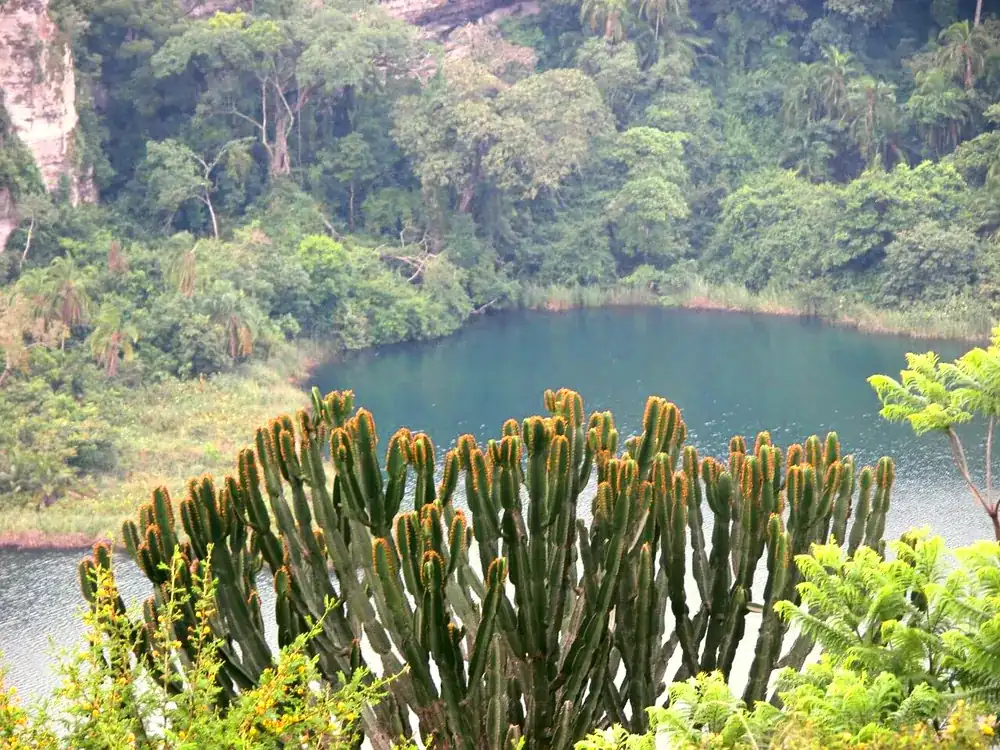
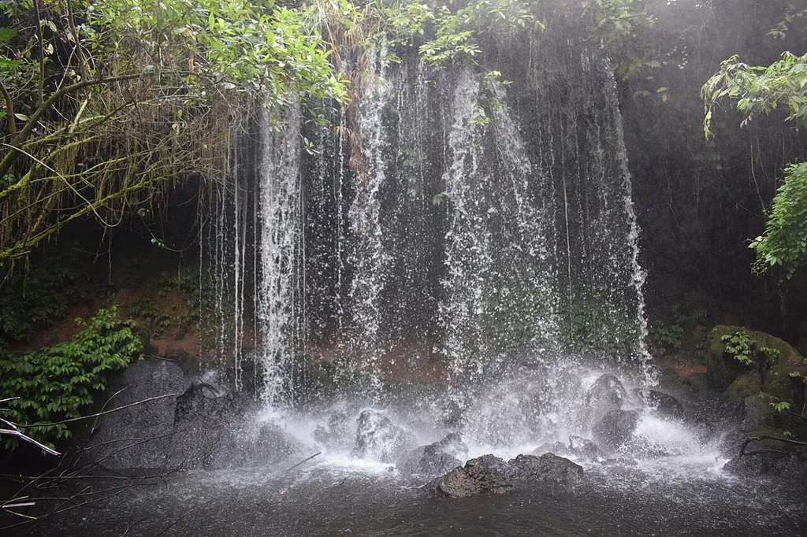
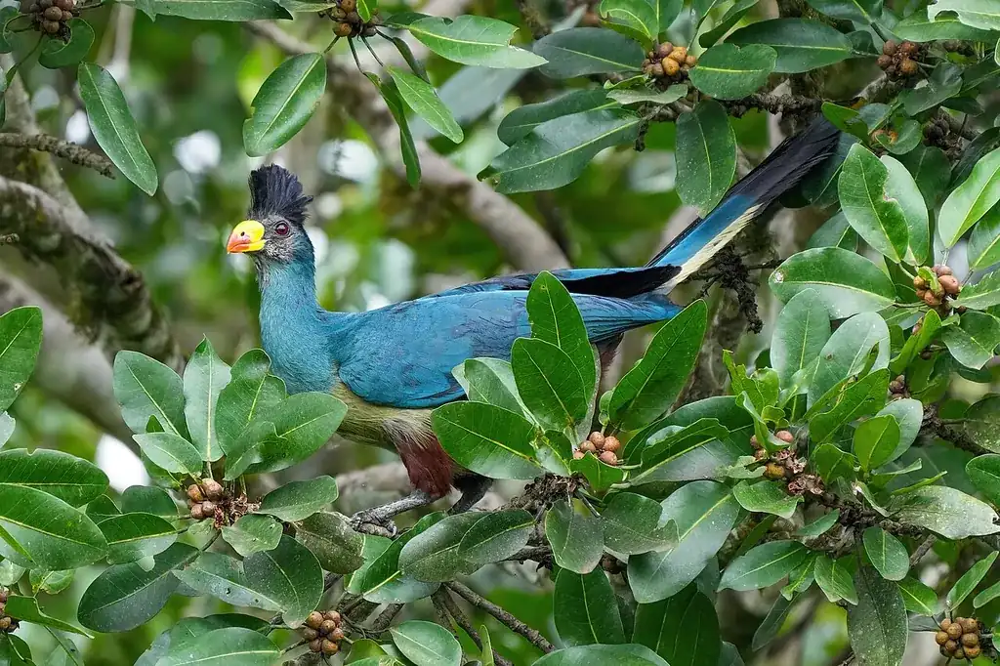
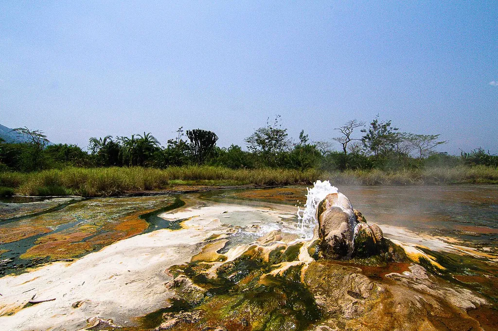
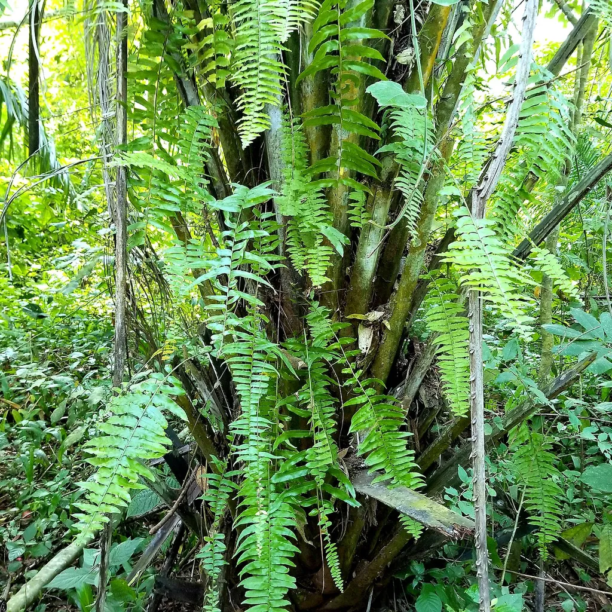
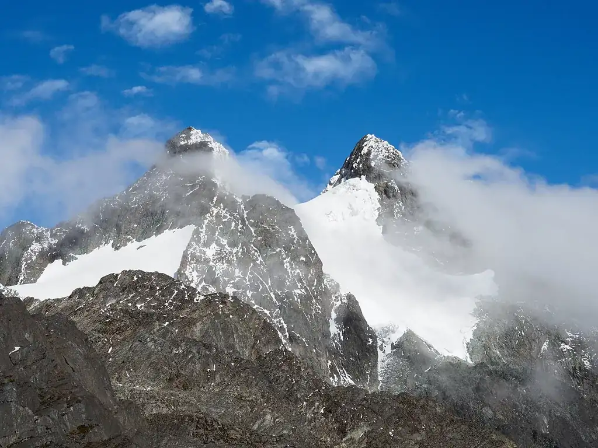
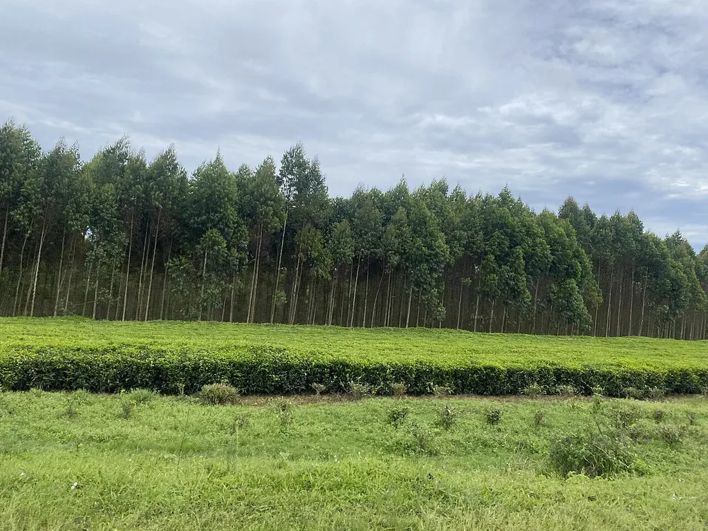
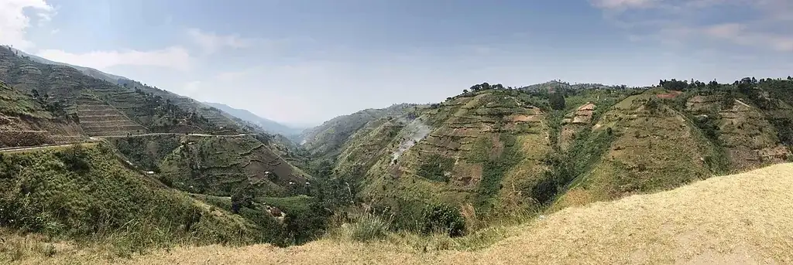

Explore
Chimp trekking in Kibale, boiling hot springs, crater lakes you can swim in, the Mountains of the Moon and a living kingdom — all from one cool, clean town. Distances below are measured from Fort Portal town, so you are never more than a day trip away from Uganda's greatest sights.

Park · about 30 min
The chimp trekking capital of Africa — 13 primate species and over 375 birds. Treks run morning and afternoon; permits from UGX 180,000 for East Africans.

Lake · about 15 min
A deep blue crater lake perfect for a swim, a viewpoint walk or simply one of Tooro's most photographed views.

Caves · about 15 min
The famous Bachwezi legend caves at Nyakasura, with waterfalls, stalactites and three crater lakes on the walking trail.

Lakes · half-day loop
Dozens of crater lakes — Nkuruba, Nyabikere, Nyinambuga and more. Ride the "Top of the World" loop between town and Kibale.

Kingdom · in town
Home of King Oyo, one of the world's youngest monarchs, on Karuzika hill with sweeping views over Fort Portal town — a 15-minute walk from the motel.

Birding · about 45 min
A community-run boardwalk famous for the Great Blue Turaco and over 200 bird species — one of Uganda's best birding spots.

Park · about 1 hr 30
The male and female springs of Semuliki National Park. Water boils hot enough to cook eggs, deep in ancient Congo-basin forest.

Reserve · about 1 hr
Game drives with elephants, buffalo and Uganda kobs, plus sweeping views over the Lake Albert escarpment.

Mountains · about 1 hr 30
The legendary Mountains of the Moon. Day hikes to panoramic ridges or full treks to Margherita Peak, Africa's third highest summit.

Countryside · on the roadside
The hills around Fort Portal are carpeted in tea — stop at the estates along the Kibale road, plus the Karambi Royal Tombs of the Tooro kings.

Rift · about 2 hrs
Stand on the escarpment edge and look across the Albertine Rift toward the Congo border, with fishing villages below at Ntoroko.

In town · within 2 km
Fort Portal Golf Course, Afriyea Golf Academy and King Oyo Sports Complex — all a short hop from the motel.